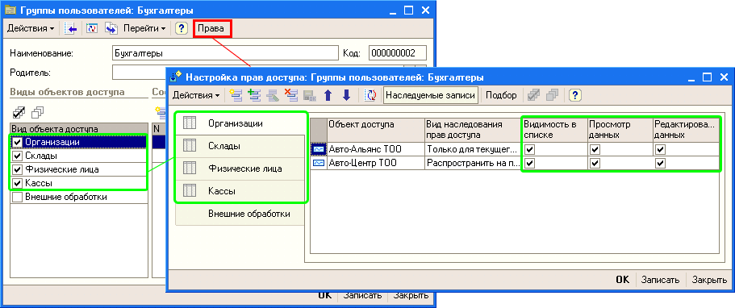
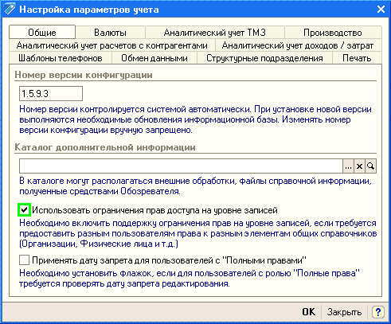
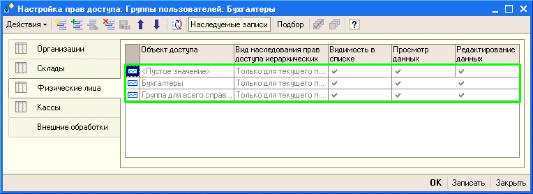

Используется для настройки прав пользователя (заполняется регистр сведений «Настройки прав доступа пользователей»).
Обработку «Настройка прав доступа» можно вызвать из формы списка или из формы элемента справочника «Группы пользователей» с помощью кнопки «Права» (Рисунок 1).
Права доступа настраиваются только для назначенных видов объектов доступа (Рисунок 1).

Рисунок 1 – Вызов обработки «Настройка прав доступа».
Виды доступа:
Для включения ограничения прав доступа на уровне записей в целом для конфигурации значение константы «Использовать ограничения прав доступа на уровне записей» необходимо установить в Истина (Рисунок 2).

Рисунок 2 – Использовать ограничения прав доступа на уровне записей.
Особенности настройки прав доступа к конкретным объектам:

Рисунок 3 - Настройка прав доступа к физическим лицам.